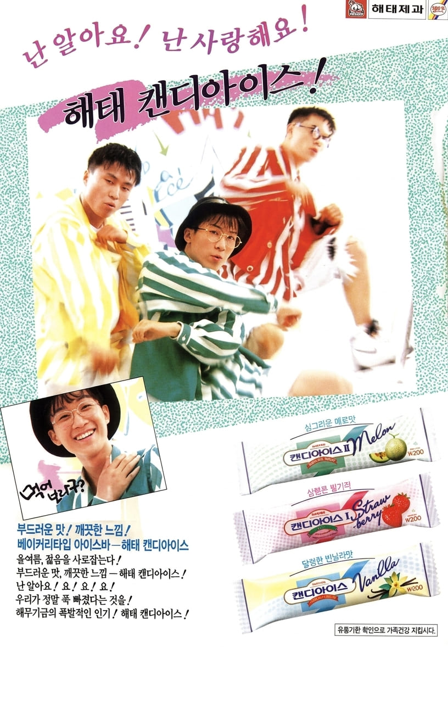

서태지,양현석,이주노
부드러운 맛,깨끗한 느낌 - 해태 캔디아이스 !
난 알아요! 요! 요! 요!
우리가 정말 푹 빠졌다는 것을 !


부드러운 맛,깨끗한 느낌 - 해태 캔디아이스 !
난 알아요! 요! 요! 요!
우리가 정말 푹 빠졌다는 것을 !
서태지, 양현석, 이주노로 구성된 서태지와 아이들은 1992년 데뷔와 동시에 대한민국 대중음악계에 큰 변화를 가져온 그룹이다. 힙합, 랩, 댄스 음악을 대중화하며 젊은 세대의 폭발적인 지지를 받았고, 당시 새로운 문화와 패션, 라이프스타일을 이끄는 대표적인 청춘 아이콘으로 자리 잡았다.
캔디아이스는 해태제과가 출시한 아이스크림 제품으로, 부드러운 맛과 시원한 청량감을 강조한 제품이다. 젊은 소비자층을 겨냥해 트렌디한 이미지를 내세웠으며, 당시 큰 인기를 끌던 연예인을 광고 모델로 기용해 브랜드 인지도를 높였다.
광고는 서태지와 아이들의 대표곡 「난 알아요」를 활용해 강렬한 인상을 남겼다. 젊고 역동적인 분위기와 신세대 감성을 강조하며 기존 아이스크림 광고와 차별화된 이미지를 보여주었다. 당시 최고의 인기 그룹이 출연한 광고로 큰 화제를 모았으며, 청소년층에게 특히 높은 관심을 받았다.
1990년대 초반은 신세대 문화가 본격적으로 등장한 시기였다. 기업들은 젊은 소비자를 공략하기 위해 인기 가수와 스타를 적극적으로 광고 모델로 활용했으며, 음악과 패션, 광고가 결합된 마케팅이 활발하게 이루어졌다. 서태지와 아이들은 이러한 시대 변화를 상징하는 대표적인 광고 모델이었다.